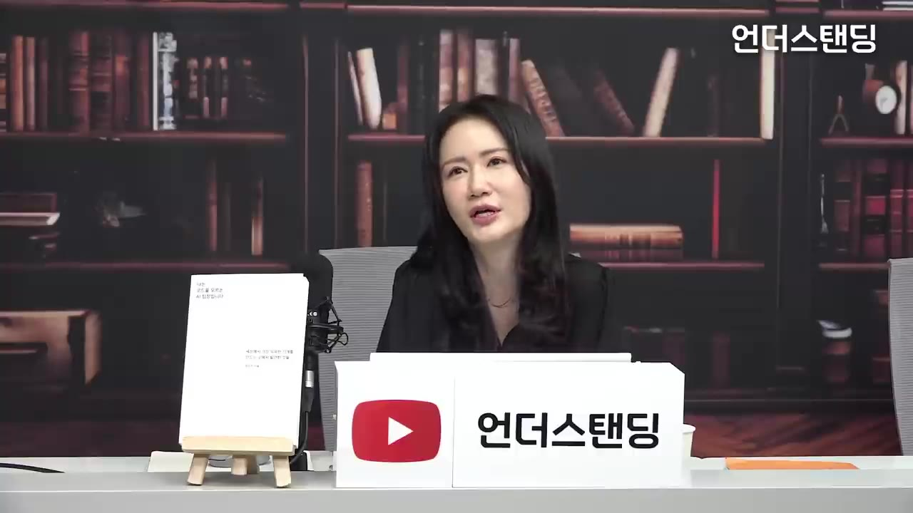
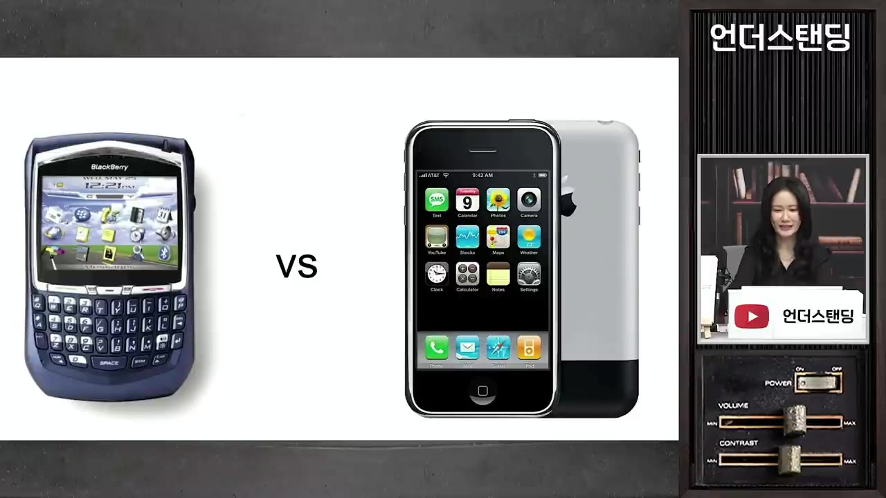
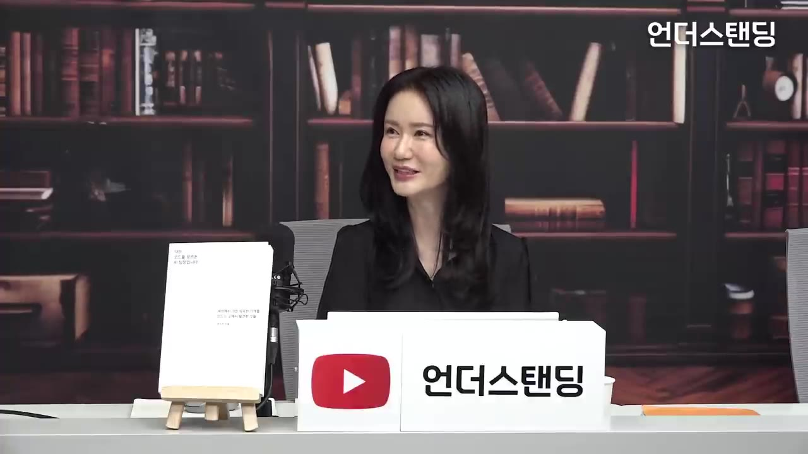
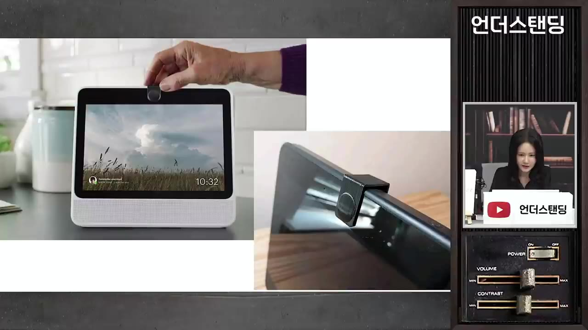
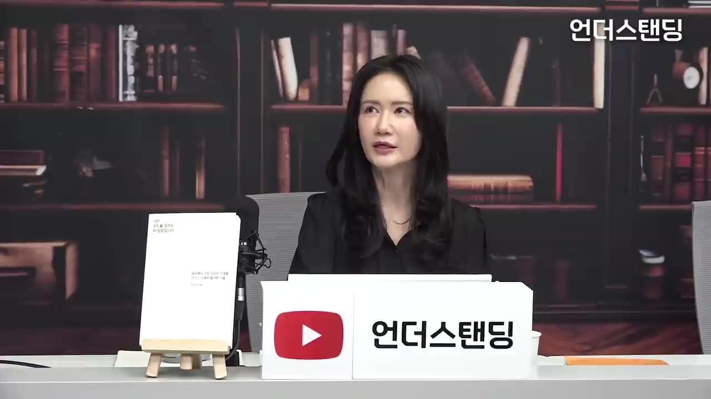
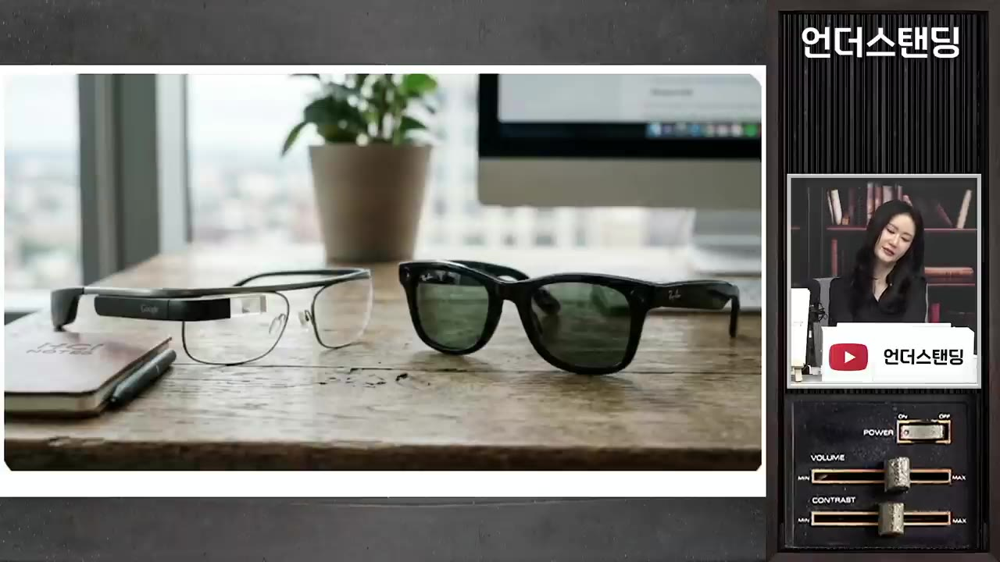
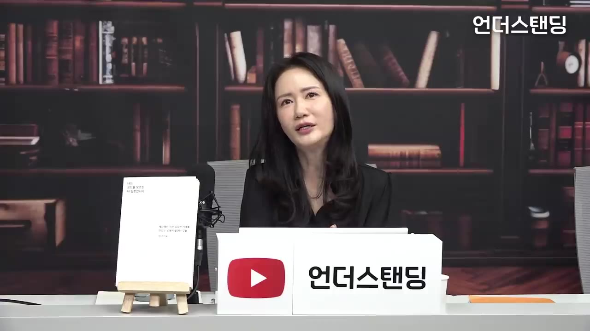
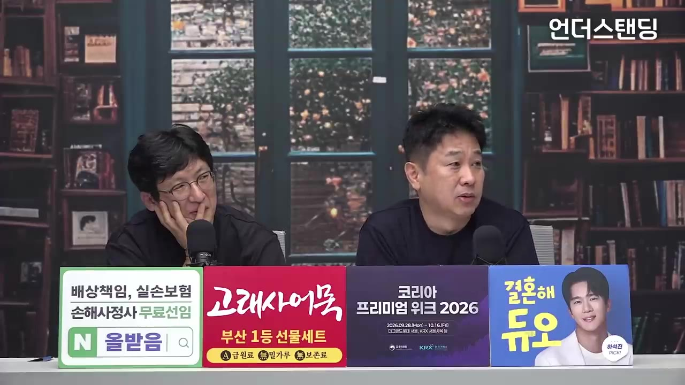
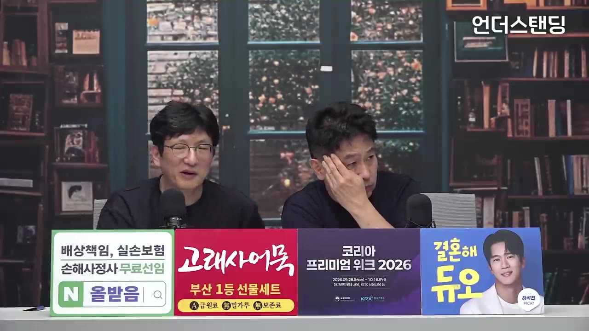

[전 구글 AI 팀장 1부] 코딩 모르는 한국 문과생이 인텔·삼성·메타 찍고 구글 딥마인드 팀장 된 비결 (정수진 저자)
🎙️ 자막 대신 영상 음성을 받아써서 정리 (ko (음성 받아쓰기·GPU))
▶ 원본 영상 보기한눈에 보기
- 정수진 저자는 이과 출신이 아니고 코드도 모르지만 인텔 재팬, 삼성, 인텔 본사, 메타, 구글 딥마인드를 거쳤습니다. 기술 옆에서 "사람 편에 서는" UX 리서처로 일한 덕분이라고 말합니다.
- AI UX는 아직 실체가 없는 기술을 다룹니다. 수조 원 단위 투자를 결정하기 전에 이 기술이 사람들의 삶에 들어가면 어떻게 될지 시나리오와 스토리텔링으로 그려 보는 일이라고 설명합니다.
- 인텔이 스티브 잡스의 아이폰 칩 요청을 거절한 일은 "새 기술을 옛날 틀로 평가한" 실패 사례로 나옵니다. 저자는 지금의 AI 채팅창도 블랙베리의 쿼티 자판 같은 과도기 형태일 수 있다고 봅니다.
- 메타 시절 화상통화 기기 포털에는 카메라 덮개를 달자고 제안했고, 레이밴 스마트 안경은 기능을 빼는 쪽으로 설계했습니다. AI 덕분에 만드는 비용이 거의 0에 가까워진 지금은 "무엇을 뺄지 고르는 안목"이 더 중요하다고 말합니다.
- 경력은 한 분야에서 직급을 올리는 대신 마케팅 리서치 → 제품 혁신 → UX → AI UX로 옆으로 넓혔고, 그 다름이 오히려 차별점이 됐다고 합니다.
이런 분께 도움이 됩니다
- 문과 출신인데 빅테크나 AI 업계에서 일하고 싶은 분이 기술 기업 안의 비개발 직무(UX 리서치)가 실제로 무슨 일을 하는지 감을 잡을 수 있습니다.
- 신사업·신제품 기획자는 데이터가 없는 새 기술을 평가할 때 빠지기 쉬운 함정(옛날 틀, 멘탈 모델)과 대응법을 얻을 수 있습니다.
- 경력을 바꾸려는 직장인은 "경험 없는 분야"에 지원할 때 자신의 다른 이력을 강점으로 내세우는 방법을 참고할 수 있습니다.
핵심 내용
출연자 소개: 코드를 모르는 AI 팀장 (0:00)
- 저서 제목은 『나는 코드를 모르는 AI 팀장입니다』입니다.
- 경력 순서는 다음과 같습니다.
- 한국에서 대학 졸업 → 미국 대학원(광고 마케팅 전공)
- 인텔 재팬 입사(첫 정규직)
- 삼성
- 미국 인텔 본사
- 실리콘밸리에서 일하다 소프트웨어 경험을 쌓고 싶어 메타로 옮김(약 6년). 인텔·삼성은 하드웨어 쪽에 치우쳐 있다고 느꼈다고 합니다.
- 구글 딥마인드(4년 조금 넘게), 최근 퇴사
- 맡은 일은 코딩이 아니라 AI UX 조직 업무였습니다. UX(User Experience, 사용자 경험)는 새 기술이 사용자와 만나는 접점을 미리 설계하는 일입니다.
기술 기업에 "사람 편에 서는 사람"이 필요한 이유 (3:56)
- 주장: 개발자는 기술 편에 서 있으므로, 직업적으로 사람 편에 서는 사람이 있어야 균형이 맞습니다.
- 근거 1: 어려운 기술 난제 안에 갇혀 있으면 오히려 안 보이는 것이 있습니다. 문과식 훈련을 받은 사람이 함께 고민하면 풀리는 경우가 있습니다.
- 근거 2: 이제 기술은 커머디티(commodity, 누구나 비슷하게 가진 범용품)가 됐습니다. 그래서 어떤 기술을 가졌느냐보다 그 기술이 사람에게 얼마나 중요한지, 사람을 어떻게 돕는지가 더 중요한 시기라고 봅니다.
AI UX는 "다른 시간대"를 다룬다 (5:10)
- 보통 UX는 이미 나온 제품을 사람들이 어떻게 쓰는지, 무엇을 고칠지 봅니다.
- 반면 AI UX는 기술이 막 생겨나 실체가 없는 초기 단계를 다룹니다. 빅테크의 투자 결정은 몇 조 원 단위인데, 기술만 보고는 결정할 수 없습니다. 이 기술이 사람들의 삶에 들어갔을 때 어떤 잠재력이 있는지 상상해 봐야 합니다.
- 예시 – 음성인식: 지금 잘 쓰이는 음성인식·멀티모달(글·음성·이미지를 함께 다루는 AI) 기술에는 적어도 10년 전에 투자가 시작됐습니다. 그때는 PC에 들어갈지 휴대폰에 들어갈지 아무도 몰랐습니다.
- 저자가 메타에 들어갔을 때 메타의 음성인식 기술은 뒤처져 있었습니다. 첫 스마트 스피커(포털)에는 경쟁사인 아마존 알렉사 기술을 썼고, 사내에서도 고민이 많았다고 합니다. 저자는 5~10년 전 결정 당시 이 기술을 과소평가했을 수 있다고 봅니다.

시나리오와 스토리텔링으로 결정을 돕는다 (8:34)
- 미래는 이과든 문과든 아무도 모릅니다. 그래서 기술만 가지고는 결정할 수 없습니다. 기술을 아는 사람, 경영·비즈니스를 보는 사람, 사용자 니즈를 보는 사람이 함께 토론해서 결정합니다.
- 예: "10년 후에는 휴대폰에 말만 하면 앱이 켜진다" 같은 시나리오를 만들고, 그 미래에서 음성인식이 얼마나 중요할지 논의합니다.
- 기술을 모르는 사람이 상상하기 더 쉽다고 말합니다. 기술을 아는 사람은 "지금 이게 안 되고 저게 안 되는데 그게 되겠어?" 하는 틀에 갇히기 때문입니다.
- 저자 팀은 사내에서 자신들을 "의도적으로 사람 편에 서는 사람, 기술 생각 안 하는 사람"이라고 소개했다고 합니다. 사람의 하루 일과 속에서 기술이 어떤 영향을 주는지 감성적으로 접근합니다.
- 인상적인 주장: "굉장히 큰 돈이 들어가는 결정일수록 감성적·감정적 요소가 없으면 결정하기 힘든 경우가 많다."
실패담: 블랙베리와 아이폰, 그리고 인텔의 거절 (11:24)
- 인텔 시절 조사 결과: 인텔은 PC 산업을 이끄는 회사라 애플 아이폰이 나오기 훨씬 전부터 모바일의 잠재력을 고민했습니다. 그런데 2000년대 초반 사용자 조사에서는 모바일 인터넷이 좋다는 사람이 아무도 없었습니다. "집에 큰 화면과 키보드가 있는데 내가 그걸 왜 써요?"라며 화를 내는 사람도 있었다고 합니다.
- 저자는 직감적으로 잠재력이 있다고 느꼈지만 근거 데이터가 없어 설득하지 못했습니다.

- 아이폰을 보고 깨달은 점: 삼성으로 옮긴 뒤 아이폰이 나왔습니다(자막상 "2006년도").
- 블랙베리는 폴더, 링크 등 컴퓨터를 그대로 작은 기기에 밀어 넣은 방식이었습니다.
- 아이폰은 화면 전체(리얼 에스테이트, 화면 공간)를 터치로 쓰고 앱 구조를 도입했습니다.
- 결론: 스마트폰 혁명은 칩이나 기기의 혁명이 아니라 "쓰는 방식"의 혁명이었습니다. 완전히 다른 기술을 옛날 컴퓨터의 틀로 보고, 사람들에게도 그 틀로 물었던 것이 문제였습니다.
- 폴 오텔리니(Paul Otellini, 당시 인텔 CEO)의 결정: 2005~2006년쯤 스티브 잡스가 인텔을 찾아와 모바일 칩을 만들어 달라고 했습니다.
- 사내에서는 "그게 몇 개나 팔리겠냐"는 시장 규모 논의가 오갔습니다. 칩 단가가 너무 싸서 할 수 없다며 거절했습니다.
- 당시 아이폰은 실물이 없었고 콘셉트와 인터페이스 설명뿐이었습니다. 비교할 데이터는 기존 블랙베리 시장뿐이었습니다.
- 오텔리니는 훗날 "인텔은 데이터의 회사라 데이터를 정말 많이 들여다봤지만 그런 결론밖에 낼 수 없었다. 실제 시장은 당시 데이터의 100배 이상이었다"고 회고했다고 합니다.
- 교훈: 최신 기술의 UX 리서치는 사용자에게 예/아니오를 묻는 일이 아닙니다. 미래의 잠재력을 무언가로 보여 주고 "이게 어떨 것 같아? 이런 점이 좋은데" 하고 대화할 수 있어야 합니다. 저자는 이 실패담을 엔지니어들에게 직접 보여 주며 "옛날 틀로 세대를 보지 말자"고 말한 적도 있다고 합니다.
지금의 AI 채팅창은 "새 블랙베리"일 수 있다 (13:56, 18:03)
- 저자는 AI도 기존 컴퓨팅과 근본적으로 다른데, 지금 AI의 UX가 정말 새로워졌는지는 의문이라고 말합니다. 지금의 채팅창이 블랙베리의 쿼티 자판일 수 있다는 것입니다.
| 구분 | 기존 컴퓨팅 | AI |
|---|---|---|
| 예측 가능성 | 예측할 수 있음. 예상과 다르면 '오류' | 결과를 정확히 예측할 수 없음 |
| 성격 | 도구 | 파트너에 가까움 |
| 평가 기준 | 응답 속도, 정확도 | 신뢰할 만한가, 나를 잘 이해하는가 |
| 프라이버시 | 상대적으로 단순 | 훨씬 복잡함 |
- 그래서 AI를 평가하는 지표(매트릭스)부터 새로 만들어야 한다고 봅니다.
- "페라리로 피자를 나른다": 실리콘밸리에서 자주 쓰는 말이라고 합니다. AI는 대단한 능력이 있는데 사용자들은 검색하듯 몇 단어 묻고 끝냅니다. AI 능력의 1/100, 1/1000도 쓰지 않는다는 뜻입니다.

- 진행자의 예: 게스트에 대해 알고 싶을 때 지금은 퍼플렉시티(Perplexity)를 열고 직접 입력해야 합니다. AI가 대화를 듣고 있다가 "지금 대화 중인 분에 대해 조사해 봤는데 더 알려드릴까요?"라고 먼저 제안하면 "예"만 누르면 됩니다. 부르면 오는 퀵서비스 기사가 아니라 늘 옆에 있는 비서처럼, 또는 영화 〈Her〉처럼 말로 대화하는 방식을 예로 들었습니다.
- 멘탈 모델(mental model, 예전 경험으로 새 기술을 이해하는 틀): 자전거를 타 본 사람은 오토바이가 대충 어떻게 움직이는지 아는 것과 같습니다. 그런데 AI는 컴퓨터와 다르기 때문에 이 틀이 문제가 됩니다.
- 한 부류는 한 번 시켜 보고 "별거 없네" 하고 다시 쓰지 않습니다.
- 다른 부류는 시장의 과대 홍보만 듣고 지나치게 대단하다고 생각합니다.
- 벤치마크 속도 경쟁은 치열한데 AI를 어떻게 써야 하는지는 아무도 가르쳐 주지 않는다는 것이 문제라고 짚습니다.
아직 없는 제품은 어떻게 조사하나: 도그푸딩 (23:23)
- 신제품 아이디어는 외부에 유출될 수 있어서 빅테크도 바깥에서 폭넓게 조사하기 어렵습니다.
- 대신 도그푸딩(dogfooding)을 합니다. 개밥을 먼저 먹어 보듯 내부 직원 수백 명이 먼저 써 보는 방식입니다. "이게 이상하다", "생각보다 이렇게 쓰더라" 같은 피드백이 계속 올라오고, 이를 통해 제품을 다듬습니다.
성공 사례 1: 메타 포털의 카메라 덮개 (24:23)
- 제품: 메타의 영상통화 기기 포털(Portal)입니다. 지금은 단종됐습니다.
- 출발점: 처음에는 사람을 따라 움직이는 카메라 기술이 먼저 있었습니다. 요리하면서 이리저리 움직여도 카메라가 따라옵니다. "사람을 연결한다"는 회사 비전에 맞춰 영상통화 기기로 만들었습니다. 기술이 먼저 있고 쓸 곳을 나중에 찾은 경우인데, 대부분의 회사가 그렇다고 합니다.

- 문제: 메타는 저자가 본 회사 중 하드웨어를 가장 잘 만들었지만, 브랜드 신뢰가 약점이었습니다. 사용자 테스트에서 "정말 좋아요, 쓰고 싶어요"라고 하던 사람들도 "페이스북에서 나온다면요?"라고 물으면 많은 수가 "안 쓰고 싶다"고 답했습니다. 특히 미국에서는 케임브리지 애널리티카 사건, 개인정보를 광고에 쓴다는 논란이 한창일 때였습니다.
- 반대 의견: 경영진은 "덮개를 달면 오히려 프라이버시 약점을 사용자에게 상기시키는 것 아니냐"며 반대했습니다.
- 설득 방법: 저자 팀은 알렉사 영상통화 기기 사용자들을 조사했습니다. 사용자들이 불안해서 식탁보 같은 천을 기기 위에 덮어 두는 모습을 찍은 사진과 인터뷰를 보여 줬습니다.
- 소프트웨어 안쪽 깊숙이 있는 프라이버시 설정은 눈에 보이는 장치만큼 안심을 주지 못한다는 논리였습니다.
- 고민하고 있다는 것을 소프트웨어뿐 아니라 하드웨어로도 보여 줘야 한다고 주장했습니다.
- 결과: 덮개를 달았습니다. 통화할 때만 열고 쓰지 않을 때는 닫아 두니 확실히 안 보입니다. 사용자가 직접 통제한다는 느낌을 눈으로 확인하는 데서 오는 안도감이 핵심이었습니다.

- 저자 팀은 "이렇게 써 보자"는 제안도 하지만 "그게 정말 필요할까요?"라며 찬물을 끼얹는 역할도 많이 했다고 합니다.
성공 사례 2: 레이밴 스마트 안경은 "빼는" 설계 (30:51)
- 메타와 레이밴(Ray-Ban)이 함께 만든 스마트 안경은 출시된 지 몇 년 안 됐지만 7~8년 전부터 기획한 프로젝트라고 합니다. 저자는 AR/VR 하드웨어 팀에서 이 일을 했습니다.
- 기술이 많으니 엔지니어들은 안경에 뭔가를 많이 넣고 싶어 했습니다. 저자 팀은 넣지 않으려고 노력했습니다.
- 조사 결과: 아이 생일 같은 순간에 사람들이 휴대폰으로 찍느라 정작 아이가 촛불 끄는 모습을 직접 보지 못합니다.
- 설계 방향: 알림을 띄우지 않고 기능도 더 넣지 않기로 했습니다. 안경이 알아서 녹화해 주니 휴대폰을 꺼내지 않고 그 순간에 집중할 수 있게 하자는 것입니다. 목표는 "사람이 그 순간에 머물고 사랑하는 사람과 순간을 공유하게 하는 기술"이었습니다.

AI 시대엔 "빼는 게 일" (32:34)
- 인텔 시절 제품 하나를 낼 때 기능(피처) 후보가 100개 넘게 있었고, 이를 30개 정도로 줄였다고 합니다. 각 기능을 만든 사람은 자기 기능을 넣고 싶어 하는 게 당연하므로 사용자를 중심에 두고 뺄 것을 정합니다.
- 생성형 AI 이후 만드는 비용이 거의 공짜가 됐습니다. 예전에는 시안을 한두 개 만들었다면 지금은 10~20개씩 만들어 옵니다. 그래서 그중 무엇을 고를지 판단하는 안목이 더 중요해졌고, "빼는 게 일이 됐다"고 말합니다.

첫 직장 잡기: 절실함으로 문을 두드리다 (35:33)
- 저자는 페이스북과 구글에서 각각 처음으로 AI UX 리서치 조직을 만들었고, 그 과정에서 사람을 5~10명가량 뽑았습니다.
- 처음 업계에 들어가는 게 가장 어렵고 가장 절실하다고 말합니다. 20여 년 전 미국도 경력직만 뽑아서, 경력이 없는 학생은 어떡하냐는 울분이 들었다고 합니다.
- 컴팩 인턴: 교수님 심부름으로 교수 사무실에 갔다가 컴팩(현재 HP에 합병된 회사)이 교수 추천으로 인턴을 뽑는다는 문서를 봤습니다. 추천을 받지 못했는데도 "내가 나를 추천하면 된다"는 생각으로 도서관에서 포트폴리오를 만들어 직접 지원했고, 합격했습니다. "쪽팔리면 말지" 하는 마음이었다고 합니다.
- 인텔 재팬 입사: 9·11 무렵이라 인턴을 마친 뒤에도 일자리가 없었습니다. 보스턴에서 비행기를 타고 샌프란시스코 엔지니어 박람회에 갔습니다. "여기는 엔지니어 뽑는 곳"이라는 말을 들었지만 "여기까지 왔으니 면접만 보고 가겠다"며 열 군데 정도 면접을 봤습니다. 몇 달 뒤 박람회 부스에 있던 인텔 재팬 HR 담당자에게서 연락이 와 마케팅 직무로 입사했습니다.

- "너는 다르니까 뽑았다": 입사 첫날 본부장 에다 마키코 씨에게 일본 마케팅 부서에 외국인을 뽑은 이유를 물었습니다. "똑같은 사람을 뭐하러 뽑나. 한국인이고 미국에서 공부했으니 일본인과 다른 새로운 시각을 낼 것 같았다"는 답을 들었습니다. 저자는 이 말이 커리어의 주춧돌이 됐다고 합니다. 약점이라고 생각한 것도 잘 차별화하면 강점이 된다는 깨달음이었습니다.
수직 상승 대신 수평 확장 (41:03)
- 두 번째 직장부터의 어려움은 종류가 다릅니다. 이전에 한 일이 새 분야에서 얼마나 가치 있는지 증명해야 합니다. 저자는 "이건 안 해 봤지만 기존 경험 덕분에 이렇게 차별화할 수 있다"는 방식으로 설득했습니다.
- 한 분야에서 본부장까지 올라가는 길 대신 마케팅 리서치 → 제품 혁신 → UX(미국에서 뜨고 있었음) → AI UX로 옆으로 넓혔습니다. 위로 올라가지 않는 것처럼 보였지만 본인에게는 재미있었고 차별점이 됐다고 말합니다.

- 고위직일수록 더 통한다: 실무는 주니어가 하고 윗사람은 넓은 시각이 필요하기 때문입니다. 저자도 채용할 때 일부러 절반은 다른 분야 출신을 뽑았고 실제로 도움이 됐다고 합니다.
- 진행자는 "자원이 많은 글로벌 기업이라 가능한 채용 아니냐"고 반문했습니다. 저자는 그럴 수도 있다고 인정하면서, 자신은 주로 팀이 새로 생길 때(스마트 기기 초창기, 메타·구글에 없던 AI UX 리서치 팀) 들어갔기 때문에 가능했다고 답했습니다.
- UX 경력 없이 UX 시니어가 될 수 있었던 이유:
- 미국 회사는 상사가 일일이 지시하지 않고 주니어도 자기 로드맵을 직접 짭니다. 매니저는 마찰을 해결하고, 큰 그림을 그리고, 다른 팀과 연결하는 역할입니다.
- 마케팅 리서치와 UX 리서치는 둘 다 리서치입니다. 마케팅 리서치는 인텔·삼성처럼 50년 넘은 회사에서 역사가 길고 깊습니다. 반면 UX 리서치는 소프트웨어 회사에서 디자인 조직 아래 리서처를 두는 형태였습니다.
- 그래서 저자는 너무 기술적인 세부에만 매달리지 말고 전체 우선순위와 맵을 그리며, 정성(인터뷰 등)과 정량(수치 데이터) 조사를 함께 하는 체계를 가져갔습니다. 같은 UX 조직 안에서도 오히려 가르치는 부분이 많았다고 합니다.
- (자막은 46분 31초쯤 "본인 업무 방식의 장단점" 질문에 답하던 중 끊깁니다. 그 이후 내용은 2부로 이어지는 것으로 보입니다.)
기억할 숫자·인용
- 몇 조 원 단위: 빅테크의 기술 투자 결정 규모
- 10년 전: 음성인식·멀티모달 같은 기술에 투자가 시작된 시점
- 2005~2006년쯤: 스티브 잡스가 인텔에 모바일 칩을 요청한 시기(자막상)
- 100배 이상: 오텔리니가 회고한, 당시 데이터보다 실제로 컸던 시장 규모
- 100여 개 → 30개: 인텔에서 제품 하나를 낼 때 기능을 줄이는 규모
- 7~8년: 레이밴 스마트 안경을 기획한 기간
- 절반: 저자가 채용할 때 일부러 뽑은 다른 분야 출신의 비율
- "큰 돈이 들어가는 결정일수록 감성적·감정적 요소가 없으면 결정하기 힘들다."
- "스마트폰 혁명은 칩이나 기기의 혁명이 아니라 쓰는 방식의 혁명이었다."
- "페라리로 피자를 나른다." (AI를 검색처럼만 쓰는 현실)
- "AI 시대에는 만드는 게 공짜라 빼는 게 일이 됐다."
- "똑같은 사람을 뭐하러 뽑아. 네가 다르니까 뽑았지." (인텔 재팬 에다 마키코 본부장)
생각해볼 점
- (사실 확인) 자막에는 아이폰이 "2006년도"에 나왔다고 되어 있지만, 일반적으로 알려진 아이폰 발표·출시는 2007년입니다. 말실수이거나 받아쓰기 오류일 수 있습니다. 오텔리니의 "100배" 회고도 출연자의 기억에 기댄 인용이라 정확한 표현은 원문으로 확인할 필요가 있습니다.
- (내 의견) "기술을 모르는 사람이 미래를 더 쉽게 상상한다"는 말은 상상의 폭에는 맞을 수 있습니다. 하지만 저자도 강조했듯 결정은 기술·비즈니스·사용자 관점을 합친 토론에서 나옵니다. "문과도 된다"보다 "다른 관점이 섞여야 한다"로 읽는 편이 정확해 보입니다.
- (내 의견) 수평 확장 커리어와 "다른 분야 출신 절반 채용"은 새 팀이 생기는 시기나 자원이 넉넉한 글로벌 기업이라는 조건이 컸습니다. 진행자의 반문도 이 점을 짚었습니다. 일반 기업이나 주니어 단계에서 그대로 통할지는 따져 봐야 합니다.
바로 해볼 일
- 오늘 AI 챗봇을 쓸 때 단어 몇 개로 검색하듯 묻지 말고, 상황·목적·원하는 결과를 길게 설명하는 "대화"로 한 번 맡겨 보기
- 지금 준비 중인 기획안이나 제품에서 "넣을 것" 말고 "뺄 것" 3가지를 사용자 입장에서 적어 보기
- 내 이력 중 약점처럼 보이는 부분 하나를 골라 "이 경험 덕분에 남과 다르게 할 수 있는 것" 한 문장으로 바꿔 써 보기